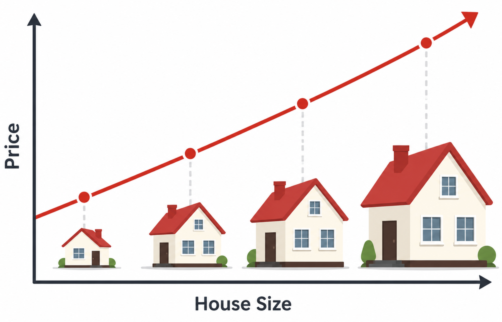
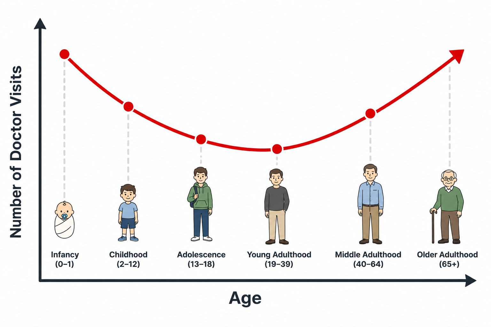

viewof selectedFns = Inputs.checkbox(
new Map([["Sigmoid", "sigmoid"], ["ReLU", "relu"], ["Tanh", "tanh"]]),
{ value: ["sigmoid"], label: "Show functions:" }
)
viewof showDeriv = Inputs.toggle({ label: "Overlay derivatives (dashed)", value: false })
// ── Function definitions ──────────────────────────────────────────────────────
fnDefs = ({
sigmoid: {
f: x => 1 / (1 + Math.exp(-x)),
df: x => { const s = 1 / (1 + Math.exp(-x)); return s * (1 - s); },
color: "#5c6bc0", label: "sigmoid(x)"
},
relu: {
f: x => Math.max(0, x),
df: x => x >= 0 ? 1 : 0,
color: "#e53935", label: "ReLU(x)"
},
tanh: {
f: x => Math.tanh(x),
df: x => 1 - Math.tanh(x) ** 2,
color: "#2e7d32", label: "tanh(x)"
}
})
xs = Array.from({ length: 400 }, (_, i) => -6 + i * (12 / 399))
// ── Build marks ───────────────────────────────────────────────────────────────
activationMarks = selectedFns.flatMap(fn => {
const { f, df, color, label } = fnDefs[fn]
const main = Plot.line(
xs.map(x => ({ x, y: f(x) })),
{ x: "x", y: "y", stroke: color, strokeWidth: 2.5 }
)
if (!showDeriv) return [main]
const deriv = Plot.line(
xs.map(x => ({ x, y: df(x) })),
{ x: "x", y: "y", stroke: color, strokeWidth: 1.8,
strokeDasharray: "5,3", opacity: 0.65 }
)
return [main, deriv]
})
// ── Legend HTML ───────────────────────────────────────────────────────────────
legendHTML = html`<div style="display:flex;gap:1.2rem;flex-wrap:wrap;margin-bottom:0.5rem;font-size:0.82rem;">
${selectedFns.map(fn => {
const {color, label} = fnDefs[fn]
return html`<span>
<svg width="28" height="10"><line x1="0" y1="5" x2="28" y2="5" stroke="${color}" stroke-width="2.5"/></svg>
${label}
${showDeriv ? html` <svg width="28" height="10"><line x1="0" y1="5" x2="28" y2="5" stroke="${color}" stroke-width="1.8" stroke-dasharray="4,2" opacity="0.7"/></svg> d/dx` : ""}
</span>`
})}
</div>`
// ── Plot ─────────────────────────────────────────────────────────────────────
activationPlot = Plot.plot({
width: 580,
height: 300,
marginLeft: 60,
marginBottom: 50,
style: { fontSize: "14px" },
x: { label: "x", domain: [-6, 6], grid: true, labelAnchor: "center", labelArrow: "none", labelOffset: 36 },
y: { label: "y", domain: [-1.3, 1.3], grid: true, labelAnchor: "center", labelArrow: "none", labelOffset: 50 },
marks: [
Plot.ruleY([0], { stroke: "#ccc", strokeWidth: 1 }),
Plot.ruleX([0], { stroke: "#ccc", strokeWidth: 1 }),
...activationMarks
]
})
html`${legendHTML}${activationPlot}`Week 2: Multi-Layer Perceptrons & Backpropagation
Week 2: Multi-Layer Perceptrons & Backpropagation
Recap. Recall from Lecture 1 that both linear regression and logistic regression are considered linear models. In this lecture, we first discuss the limitations of linear models. Then, we introduce multi-layer perceptrons as our first non-linear model. To train multi-layer perceptrons, we introduce the full backpropagation algorithm. We conclude with a discussion of how multi-layer perceptrons can represent any function.
Limitations of Linear Models
Definition. A model \hat{y} = wx + b is a linear model if an increase or decrease in any feature must always increase or decrease the output by the same proportional amount, regardless of the current value of x.
More precisely, a linear model satisfies the following two properties:
- Monotonicity. If w > 0, then x \uparrow \Rightarrow \hat{y} \uparrow always (and vice versa for w < 0).
- Constant effect. The rate of change \dfrac{\partial\hat{y}}{\partial x} = w is the same everywhere. Informally, the graph of \hat{y} vs x is a straight line.
When linearity fails
Some relationships are approximately linear. For instance, larger houses tend to cost more, and a linear fit could be a reasonable approximation of this relationship. But many interesting problems involve nonlinearities. Consider the relationship between the number of doctor visits per year and the patient’s age: visits are very frequent in infancy, drop through young adulthood, then climb again in old age. This U-shaped curve is neither monotonic nor linear.


While nonlinearity can sometimes be dealt with via feature engineering (e.g. taking the log of a feature with an exponential relationship in order to enable use of a linear model), deep learning aims to avoid feature engineering and instead learn the relationship “from scratch”.
The Multi-Layer Perceptron
Remember, the central idea in deep learning is to build complex models that can model complex relationships by composing many simple, differentiable functions.
Why stacking linear layers doesn’t help
We have already seen one example of a layer in this class: The linear layer underlying linear and logistic regression. Given that we’ve already been exposed to linear layers, let’s try composing two of them:
H = XW_1, \qquad O = HW_2
Substituting, we get O = X\underbrace{W_1 W_2}_{=:\,W}. The product of two matrices is another matrix, so O = XW can still be considered a linear model.
Warning
Key fact. Composing linear (affine) transformations always yields another linear transformation. No matter how many linear layers you stack, the composition is equivalent to a single affine map. Depth adds no expressive power without nonlinearity.
Adding nonlinearity
The fix: insert a nonlinear function \sigma (the activation function or nonlinearity) between the linear layers:
\boxed{H = \sigma(XW_1 + b_1), \qquad O = HW_2 + b_2}
Because \sigma is nonlinear, O is now a nonlinear function of X.
Element-wise application. Inside neural networks \sigma is applied element-wise:
h_i = \sigma(x_i)
Each output element depends on exactly one input element (\sigma is a scalar function of a scalar) replicated independently at every position. This is in contrast to softmax (from Lecture 1), where every output depends on all inputs.
Architecture and Terminology
The architecture above is a two-layer fully-connected multi-layer perceptron (MLP). Every input is connected to every hidden unit, and every hidden unit to every output, hence fully connected. The names for this architecture:
| Name | Notes |
|---|---|
| Multi-layer perceptron (MLP) | Historical; from the Perceptron (Rosenblatt 1958) |
| Feed-forward (neural) network | Preferred modern term |
| Fully connected network | Emphasises all-to-all connectivity |
| Dense layer / dense network | Common in Keras / TensorFlow |
Activation Functions
What should \sigma be? A good activation function is nonlinear and differentiable almost everywhere, both properties required for gradient-based training. Here are the three canonical choices. Use the interactive explorer below to compare them.
Sigmoid
\operatorname{sigmoid}(x) = \frac{1}{1 + e^{-x}}
Properties: output range (0,1); \operatorname{sigmoid}(0) = \tfrac{1}{2}; saturates to 0 and 1 at the extremes.
Derivative (enable “overlay derivatives” above to see it):
\frac{d}{dx}\operatorname{sigmoid}(x) = \operatorname{sigmoid}(x)\,\bigl(1 - \operatorname{sigmoid}(x)\bigr)
The derivative peaks at \frac{1}{4} (at x=0) and decays to zero in both directions. Select “Sigmoid” and toggle derivatives above to see this.
Warning
Vanishing gradients (preview). When sigmoid saturates (|x| \gg 0), its derivative is near zero. In a deep network, backpropagation multiplies many such near-zero terms together, causing gradients to vanish exponentially toward the early layers. This made deep sigmoid networks difficult to train, and is a key reason ReLU gained dominance.
ReLU (Rectified Linear Unit)
\operatorname{ReLU}(x) = \max(0,\, x) = \begin{cases} 0 & x < 0 \\ x & x \geq 0 \end{cases}
Derivative (the Heaviside step function):
\frac{d}{dx}\operatorname{ReLU}(x) = \begin{cases} 0 & x < 0 \\ 1 & x \geq 0 \end{cases}
At x=0, ReLU is not classically differentiable; by convention the subgradient is set to 1 there.
Why ReLU dominates modern practice:
- For x > 0, the gradient is exactly 1; it never vanishes.
- Extremely cheap to compute and differentiate.
- The adoption of ReLU (and related functions) is credited as one of the key reasons for the deep learning resurgence around 2010–2012 (e.g. the AlexNet/ImageNet breakthrough (Krizhevsky et al. 2012)).
Tanh
\tanh(x) = 2\,\operatorname{sigmoid}(2x) - 1
Tanh is a rescaled, shifted sigmoid: it ranges from -1 to +1 and is zero-centred (unlike sigmoid’s (0,1) range). Historically favoured over sigmoid for that reason, but modern practice almost universally uses ReLU or its variants (Leaky ReLU, GELU, SiLU, etc.).
Backpropagation
Let \mathcal{L} denote the loss function, a scalar that measures the discrepancy between the model’s predictions and the true targets. Training proceeds by minimizing \mathcal{L} using gradient descent, which requires computing the gradient of the loss with respect to every parameter in the model, i.e., \dfrac{\partial \mathcal{L}}{\partial W^m} for each weight matrix W^m.
Backpropagation provides an algorithm for evaluating all such gradients by systematically applying the chain rule of calculus from the output layer back to the input layer. It can achieve more efficiency by reusing intermediate quantities computed during the forward pass, avoiding redundant calculations and enabling gradient computation in time proportional to a single forward evaluation.
The Chain Rule: Two Cases
Case 1: single intermediate variable. If \mathcal{L} = \mathcal{L}(z(w)):
\frac{d\mathcal{L}}{dw} = \frac{d\mathcal{L}}{dz}\,\frac{dz}{dw}
Case 2: multiple intermediate variables. If \mathcal{L} reaches w through z_1(w), z_2(w), \ldots, z_N(w) independently, i.e. \mathcal{L} = \mathcal{L}(z_1(w), z_2(w), \ldots, z_N(w)):
\frac{d\mathcal{L}}{dw} = \sum_{i=1}^{N} \frac{\partial \mathcal{L}}{\partial z_i}\,\frac{dz_i}{dw}
Think of it as: sum the derivative contribution along every path from w to \mathcal{L}. Both cases come up repeatedly in the backprop derivation.
Notation and Definitions
For an L-layer MLP:
| Symbol | Meaning | Shape |
|---|---|---|
| L | Number of layers | scalar (integer) |
| N^m | Width (# units) of layer m | scalar (integer) |
| W^m | Weight matrix for layer m | \mathbb{R}^{N^m \times N^{m-1}} |
| b^m | Bias vector for layer m | \mathbb{R}^{N^m} |
| \sigma^m | Nonlinearity at layer m | \mathbb{R}^{N^m} \to \mathbb{R}^{N^m} (element-wise) |
| a^m | Pre-activations for layer m | \mathbb{R}^{N^m} |
| h^m | Activations for layer m | \mathbb{R}^{N^m} |
| h^0 | Model input \mathbf{x} | \mathbb{R}^{N^0} |
| y | Target output | \mathbb{R}^{N^L} |
| \mathcal{L} | Loss: \mathcal{L}(h^L,\, y) \in \mathbb{R} | scalar (real number) |
The forward pass computes, for m = 1, \ldots, L:
a^m = W^m h^{m-1} + b^m \qquad (\text{pre-activations}) h^m = \sigma^m(a^m) \qquad (\text{activations})
Backprop requires two quantities pre-specified from the model design:
- \frac{\partial \mathcal{L}}{\partial h^L}: derivative of the loss w.r.t. the model output (e.g. cross-entropy gradient).
- \frac{dh^m}{da^m} = (\sigma^m)'(a^m): derivative of the nonlinearity (sigmoid, ReLU, etc.), computed in Activation Functions.
Deriving the Weight Gradient
We want \frac{\partial \mathcal{L}}{\partial W^m_{ij}} for any entry (i,j), where i \in \{1,\ldots,N^m\} indexes the unit in layer m (row) and j \in \{1,\ldots,N^{m-1}\} indexes the unit in layer m-1 (column). In other words, W^m_{ij} is the weight of the connection from unit j in layer m-1 to unit i in layer m.
Step 1: Apply the chain rule, pivoting through a^m.
\frac{\partial \mathcal{L}}{\partial W^m_{ij}} = \sum_{k=1}^{N^m} \frac{\partial \mathcal{L}}{\partial a^m_k} \frac{\partial a^m_k}{\partial W^m_{ij}}
Step 2: Evaluate \partial a^m_k / \partial W^m_{ij}.
Expanding a^m_k explicitly: a^m_k = \sum_{\ell=1}^{N^{m-1}} W^m_{k\ell}\,h^{m-1}_\ell + b^m_k.
The weight W^m_{ij} appears only in the formula for a^m_i (the i-th row). Therefore:
\frac{\partial a^m_k}{\partial W^m_{ij}} = \begin{cases} h^{m-1}_j & k = i \\ 0 & k \neq i \end{cases}
Here i and j are fixed: they name the one weight we are differentiating. i is its row, the unit in layer m that the weight feeds into, and j is its column, the unit in layer m-1 that the weight reads from. The index k runs over all units in layer m, k = 1, \ldots, N^m, asking whether the k-th pre-activation depends on this weight. The formula for a^m_k uses only row k of W^m, so the weight in row i can affect a^m_k only when k = i. In that case the weight multiplies h^{m-1}_j (the \ell = j term of the sum), which is the derivative. For every other k, row i never appears, so the derivative is 0.
TipQuestion: How do W and a interact in the forward pass, and why does that make the derivative nonzero only when k equals i?
Start from the dimensions. W^m has shape N^m \times N^{m-1}: one row per unit in layer m, one column per unit in layer m-1. The pre-activation a^m is a vector of length N^m: one entry per unit in layer m. So the number of rows of W^m equals the number of entries of a^m.
That match is not a coincidence. The forward pass pairs them one to one. Row i of W^m has N^{m-1} entries, one per unit in layer m-1, and it is combined with the previous activations h^{m-1} (also length N^{m-1}) in a dot product, plus the bias, to produce the single number a^m_i:
a^m_i = \sum_{\ell=1}^{N^{m-1}} W^m_{i\ell}\, h^{m-1}_\ell + b^m_i
No other row of W^m enters this sum. Reading the derivative \frac{\partial a^m_k}{\partial W^m_{ij}} as “if we nudge this one weight, how much does a^m_k move?”, a weight in row i can only move the entry that row i produces, which is a^m_i. So the nonzero case is k = i, and it is h^{m-1}_j because the weight in column j multiplies the j-th previous activation.
For example, in the worked example below, W^1 is 2 \times 2, h^0 = (1, 2)^\top, and b^1 = (0, -0.5)^\top. Take the weight W^1_{21} = -1 (i = 2, j = 1). The two pre-activations are
a^1_1 = 1 \cdot 1 + 1 \cdot 2 + 0 = 3 \qquad a^1_2 = W^1_{21} \cdot 1 + 0.5 \cdot 2 - 0.5 = -0.5
Nudging W^1_{21} by \varepsilon changes a^1_2 to -0.5 + \varepsilon, so \frac{\partial a^1_2}{\partial W^1_{21}} = 1 = h^0_1 (the case k = i). It leaves a^1_1 = 3 unchanged, so \frac{\partial a^1_1}{\partial W^1_{21}} = 0 (the case k \neq i). This is also why the sum over k in Step 1 collapses to a single term.
Step 3: Collapse the sum. All terms except k=i are zero:
\frac{\partial \mathcal{L}}{\partial W^m_{ij}} = \frac{\partial \mathcal{L}}{\partial a^m_i} \cdot h^{m-1}_j
Step 4: Matrix form. The vector \frac{\partial \mathcal{L}}{\partial a^m} has shape N^m and h^{m-1} has shape N^{m-1}. Their outer product gives the gradient matrix of shape N^m \times N^{m-1}, matching W^m:
\frac{\partial \mathcal{L}}{\partial W^m} = \frac{\partial \mathcal{L}}{\partial a^m} \cdot (h^{m-1})^\top
TipQuestion: The weight gradient uses the previous layer’s activations. What do we use at the first layer, where there is no earlier layer?
The formula asks for h^{m-1}, and at m = 1 that is h^0. The notation table defines h^0 as the model input \mathbf{x}, so the first layer has a previous “layer” after all: the data itself. The forward pass already relies on this, since a^1 = W^1 h^0 + b^1. The weight gradient for layer 1 is therefore
\frac{\partial \mathcal{L}}{\partial W^1} = \frac{\partial \mathcal{L}}{\partial a^1}\, \mathbf{x}^\top
This is why the forward pass caches the input as well as the hidden activations: \mathbf{x} plays the same role for W^1 that h^1 plays for W^2.
Backpropagation also stops at a^1. We never compute \frac{\partial \mathcal{L}}{\partial h^0}, because the input is data and not a parameter we update.
In the worked example below, the first example has \mathbf{x} = (1, 2)^\top and \frac{\partial \mathcal{L}}{\partial a^1} = (0.25, 0)^\top (its column of the batch gradient). Its contribution to \frac{\partial \mathcal{L}}{\partial W^1} is the outer product
\begin{pmatrix} 0.25 \\ 0 \end{pmatrix}\begin{pmatrix} 1 & 2 \end{pmatrix} = \begin{pmatrix} 0.25 & 0.5 \\ 0 & 0 \end{pmatrix}
and the batch gradient adds the second example’s contribution in the same way.
The bias gradient follows the same derivation and is simpler: differentiating a^m_i with respect to b^m_i gives 1 rather than h^{m-1}_j, so \frac{\partial \mathcal{L}}{\partial b^m} = \frac{\partial \mathcal{L}}{\partial a^m}.
The Backward Recursion
We still need \frac{\partial \mathcal{L}}{\partial a^m}. This is where the “back” in backprop comes from.
Base case (m = L):
\frac{\partial \mathcal{L}}{\partial a^L} = \frac{\partial \mathcal{L}}{\partial h^L} \odot \frac{dh^L}{da^L}
Both factors are pre-specified. \odot is element-wise (Hadamard) multiplication.
TipQuestion: Why is the activation derivative combined with an elementwise product here, when the chain rule uses matrix products elsewhere?
In the base case, \frac{\partial \mathcal{L}}{\partial a^L} = \frac{\partial \mathcal{L}}{\partial h^L} \odot \frac{dh^L}{da^L} multiplies by the activation’s derivative one entry at a time, and the recursion below does the same at every hidden layer. This is still the chain rule.
The chain rule for vectors always multiplies by a Jacobian matrix, the matrix of partial derivatives of a layer’s outputs with respect to its inputs. The elementwise (Hadamard) product is that same matrix product in the special case where the Jacobian is a diagonal matrix:
\operatorname{diag}(d)\,v = d \odot v
So \odot is the diagonal matrix product written without building an N^m \times N^m matrix. A diagonal matrix equals its own transpose, so no transpose appears on that factor. Which case we are in depends on how each output depends on the inputs:
| Dependence | Jacobian | Chain-rule step |
|---|---|---|
| One scalar in, one scalar out | a number | ordinary multiplication |
| Each output depends only on the input in the same position (elementwise, like \sigma) | diagonal | Hadamard product \odot |
| Every output depends on every input (like a linear layer) | dense | matrix product with the transpose |
Example. Take the incoming gradient g = \frac{\partial \mathcal{L}}{\partial h^1} = (0.25, -0.5)^\top at a hidden layer with pre-activations a^1 = (3, -0.5)^\top and h^1 = \operatorname{ReLU}(a^1) = (3, 0)^\top. These are the numbers for the first example in the worked example below. We want \frac{\partial \mathcal{L}}{\partial a^1}.
First build the Jacobian entry by entry. Since h^1_1 = \operatorname{ReLU}(a^1_1) does not contain a^1_2, we get \frac{\partial h^1_1}{\partial a^1_2} = 0, and likewise \frac{\partial h^1_2}{\partial a^1_1} = 0. The diagonal entries are the ReLU slopes, 1 at a^1_1 = 3 and 0 at a^1_2 = -0.5:
\frac{\partial h^1}{\partial a^1} = \begin{pmatrix} 1 & 0 \\ 0 & 0 \end{pmatrix}
The chain rule sums over both hidden units, and the zero off-diagonal entries kill the cross terms:
\frac{\partial \mathcal{L}}{\partial a^1_1} = \underbrace{0.25 \cdot 1}_{\text{through } h^1_1} + (-0.5) \cdot 0 = 0.25
The first term goes through h^1_1 and the second through h^1_2, which contributes nothing.
In matrix form this is the product with the diagonal Jacobian, which matches the Hadamard product:
\begin{pmatrix} 1 & 0 \\ 0 & 0 \end{pmatrix}\begin{pmatrix} 0.25 \\ -0.5 \end{pmatrix} = \begin{pmatrix} 0.25 \\ 0 \end{pmatrix}
\begin{pmatrix} 0.25 \\ -0.5 \end{pmatrix} \odot \begin{pmatrix} 1 \\ 0 \end{pmatrix} = \begin{pmatrix} 0.25 \\ 0 \end{pmatrix}
Now compare the linear step that produced g. With W^2 = (0.5, -1) and \frac{\partial \mathcal{L}}{\partial a^2} = 0.5, the single output a^2 = 0.5\,h^1_1 - 1\,h^1_2 + 0.5 depends on both hidden units, so its Jacobian W^2 has no zeros and both terms of the sum survive:
g = {W^2}^\top \frac{\partial \mathcal{L}}{\partial a^2} = \begin{pmatrix} 0.5 \\ -1 \end{pmatrix} \cdot 0.5 = \begin{pmatrix} 0.25 \\ -0.5 \end{pmatrix}
This is the same “collapse the sum” idea as in the weight-gradient derivation. It collapses to one term when each output depends on one input, which is why \odot works, and it does not collapse when every output depends on every input, which is why the weights need a real matrix product. Softmax from Lecture 1 falls in the dense case, so its backward step needs a full matrix product.
Recursive case (m < L): Expanding via the chain rule, pivoting through the next layer’s pre-activations a^{m+1}:
\begin{aligned} \frac{\partial \mathcal{L}}{\partial a^m_k} &= \left(\sum_{\ell=1}^{N^{m+1}} \frac{\partial \mathcal{L}}{\partial a^{m+1}_\ell} \cdot W^{m+1}_{\ell k}\right) \\ &\quad \cdot \frac{dh^m_k}{da^m_k} \end{aligned}
In matrix form:
\frac{\partial \mathcal{L}}{\partial a^m} = \left({W^{m+1}}^\top \frac{\partial \mathcal{L}}{\partial a^{m+1}}\right) \odot \frac{dh^m}{da^m}
TipQuestion: The recursion needs the gradient from layer m+1. What do we use at the last layer, where there is no next layer?
The recursion pulls the gradient backward through the weights of the next layer, {W^{m+1}}^\top \frac{\partial \mathcal{L}}{\partial a^{m+1}}. At m = L there is no W^{L+1} and no a^{L+1}, so nothing is passed back from a later layer. That is why the algorithm has a separate base case, and why the recursion is stated only for m < L.
At the last layer the signal comes straight from the loss. The model output h^L is the argument of \mathcal{L}(h^L, y), so \frac{\partial \mathcal{L}}{\partial h^L} is found by differentiating the loss formula directly. The chain rule then needs one more link, from h^L back to a^L, and that link is the same elementwise activation derivative used in every hidden layer:
\frac{\partial \mathcal{L}}{\partial a^L} = \frac{\partial \mathcal{L}}{\partial h^L} \odot \frac{dh^L}{da^L}
Both factors are known from the model design, which is why the notes list them as “pre-specified”. In the worked example below, the output layer is the identity and the loss is \tfrac{1}{2}(h^2 - y)^2. For the first example alone, h^2 = 2 and y = 1, so \frac{\partial \mathcal{L}}{\partial h^2} = h^2 - y = 1, \frac{dh^2}{da^2} = 1, and therefore \frac{\partial \mathcal{L}}{\partial a^2} = 1. (The worked example averages over a batch of two, so its value is 0.5.) From here the recursion takes over: layer 1’s gradient is built from this number.
The key observation: \frac{\partial \mathcal{L}}{\partial a^m} depends on \frac{\partial \mathcal{L}}{\partial a^{m+1}}; the gradient one layer forward. Starting from m=L and going backwards, each step feeds the next. This is backpropagation.
Summarized as a clean algorithm:
Backpropagation Algorithm
Pre-specify (from model design):
- \frac{\partial \mathcal{L}}{\partial h^L}: loss gradient w.r.t. the model output.
- \frac{dh^m}{da^m} = (\sigma^m)'(a^m): nonlinearity derivative at each layer.
Forward pass: compute and cache all activations: h^0 = \mathbf{x}, \quad a^m = W^m h^{m-1} + b^m, \quad h^m = \sigma^m(a^m), \quad m=1,\ldots,L
Step 1: Base case (output layer): \frac{\partial \mathcal{L}}{\partial a^L} = \frac{\partial \mathcal{L}}{\partial h^L} \odot \frac{dh^L}{da^L}
Step 2: Backward recursion for m = L-1, L-2, \ldots, 1: \begin{aligned} \frac{\partial \mathcal{L}}{\partial a^m} &= \underbrace{\left({W^{m+1}}^\top \frac{\partial \mathcal{L}}{\partial a^{m+1}}\right)}_{\text{from prev step}} \\ &\quad \odot \underbrace{\frac{dh^m}{da^m}}_{\text{known}} \end{aligned}
Step 3: Weight gradients for all m: \begin{aligned} \frac{\partial \mathcal{L}}{\partial W^m} &= \underbrace{\frac{\partial \mathcal{L}}{\partial a^m}}_{\text{step 2}} \\ &\quad \cdot \underbrace{(h^{m-1})^\top}_{\text{forward pass}} \end{aligned}
Gradient descent update: W^m \leftarrow W^m - \eta\,\frac{\partial \mathcal{L}}{\partial W^m}
Why is this efficient? A single forward pass (caching all a^m) plus a single backward pass gives all weight gradients simultaneously. Without caching, computing the gradient for layer 1 would require recomputing the same intermediate quantities over and over, far more expensive work that caching avoids at the cost of a little memory.
Connecting Back to Vanishing Gradients
In the backward recursion, each step multiplies by \frac{dh^m}{da^m}. For sigmoid, \max_x \frac{d}{dx}\operatorname{sigmoid}(x) = \frac{1}{4}. In an L-layer sigmoid network, the gradient reaching layer 1 is scaled by roughly \left(\frac{1}{4}\right)^L, vanishing rapidly. For ReLU, the derivative in the active region is exactly 1 (no shrinkage). Toggle the “Tanh/Sigmoid + overlay derivatives” in the explorer above to see the saturation visually.
TipQuestion: How does this change when we train on a batch of examples instead of one?
With batching, each column represents one example. If the batch has B examples, every layer’s activations h^m become a matrix H^m of size N^m \times B, and column j holds the output of layer m for input example j. The batch size is the number of columns each layer outputs. The forward pass is the same computation applied to all columns at once:
A^m = W^m H^{m-1} + b^m \mathbf{1}^\top, \qquad H^m = \sigma^m(A^m)
Here \mathbf{1}^\top is a row of B ones, so the bias vector b^m is added to every column. The notes above write one example at a time with column vectors. Earlier, in the MLP section, we wrote H = XW_1, where each row of X is an example. The two conventions describe the same computation with rows and columns swapped.
Worked Example: One Forward and Backward Pass
The backpropagation section introduced a lot of notation at once. To see what each symbol does, we run one training step by hand on the smallest network that still shows every idea, using a batch of two examples so that the batch size shows up in the equations. The specific calculation a homework asks for is left to the assignment, and this example uses its own numbers.
Setup
The network has L = 2 layers with widths N^0 = 2, N^1 = 2, N^2 = 1. The hidden layer uses \sigma^1 = \operatorname{ReLU}. The output layer uses the identity, \sigma^2(a) = a, so h^2 = a^2. Each example has its own squared error \tfrac{1}{2}(h^2 - y)^2, and the loss \mathcal{L} is the average of these over the batch.
The batch has B = 2 examples. Each example is one column, so the input matrix X = H^0 is N^0 \times B = 2 \times 2 and the targets form a 1 \times B row Y:
X = H^0 = \begin{pmatrix} x^{(1)} & x^{(2)} \end{pmatrix} = \begin{pmatrix} 1 & -1 \\ 2 & 3 \end{pmatrix}, \qquad Y = \begin{pmatrix} 1 & 0 \end{pmatrix}
The starting parameters are:
W^1 = \begin{pmatrix} 1 & 1 \\ -1 & 0.5 \end{pmatrix}, \qquad b^1 = \begin{pmatrix} 0 \\ -0.5 \end{pmatrix}
W^2 = \begin{pmatrix} 0.5 & -1 \end{pmatrix}, \qquad b^2 = 0.5
What the indices mean
The derivation of the weight gradient used several indices. In this network they refer to the following, and we will point back to them as we compute.
| Index | Meaning | Range here |
|---|---|---|
| m | Layer number. W^m is the weights that produce layer m from layer m-1. | 1, 2 |
| i | In W^m_{ij}, the row: which unit in layer m the weight feeds into. | 1, \ldots, N^m |
| j | In W^m_{ij}, the column: which unit in layer m-1 the weight reads from. | 1, \ldots, N^{m-1} |
| k | A dummy index for a unit in layer m, used in a^m_k and in the sum over intermediate variables. | 1, \ldots, N^m |
| s | The example (column) number. It appears once we batch. | 1, \ldots, B |
So W^1_{21} is the weight from input unit 1 (column j = 1) into hidden unit 2 (row i = 2): the entry -1 in W^1. In a batch, the derivation’s single-example vectors gain a second index s. We write a^m_{ks} for the k-th pre-activation of example s, which is the entry in row k, column s of the matrix A^m. Likewise h^{m-1}_{js} is row j, column s of H^{m-1}.
Forward pass, and what gets cached
For each layer we compute A^m = W^m H^{m-1} + b^m \mathbf{1}^\top and then H^m = \sigma^m(A^m), where \mathbf{1}^\top is a row of B ones so that b^m is added to every column.
Note
Layer 1.
A^1 = \begin{pmatrix} 3 & 2 \\ -0.5 & 2 \end{pmatrix}, \qquad H^1 = \operatorname{ReLU}(A^1) = \begin{pmatrix} 3 & 2 \\ 0 & 2 \end{pmatrix}
Layer 2.
A^2 = H^2 = \begin{pmatrix} 2 & -0.5 \end{pmatrix}
Loss. The per-example losses are \tfrac{1}{2}(2 - 1)^2 = 0.5 and \tfrac{1}{2}(-0.5 - 0)^2 = 0.125, so \mathcal{L} = \tfrac{1}{2}(0.5 + 0.125) = 0.3125.
Column 1 of each matrix is the single-input computation for x^{(1)}, for instance a^1_{\cdot 1} = (1 \cdot 1 + 1 \cdot 2 + 0,\; -1 \cdot 1 + 0.5 \cdot 2 - 0.5)^\top = (3, -0.5)^\top. Column 2 is the same computation for x^{(2)}. No column mixes with another, because each entry of W^m H^{m-1} combines one row of W^m with one column of H^{m-1}.
The forward pass caches (stores in memory) the matrices that backpropagation will need, instead of discarding them:
| Cached value | Where the backward pass uses it |
|---|---|
| H^0 = X and H^1 | the weight gradient \frac{\partial \mathcal{L}}{\partial W^m} = \frac{\partial \mathcal{L}}{\partial A^m}(H^{m-1})^\top |
| A^1 | the ReLU derivative \frac{dh^1}{da^1}, which depends on the sign of each entry of A^1 |
| H^2 | the loss derivative \frac{\partial \mathcal{L}}{\partial h^2} |
Caching costs a little memory and saves recomputing any of these later. Without it, the gradient for layer 1 would need the forward pass through everything before it to be rerun.
What the chain-rule variable z_i is
In the chain rule section, z_1, \ldots, z_N were generic intermediate variables sitting between a parameter w and the loss \mathcal{L}. In an MLP, the variables we pivot through are the pre-activations a^m_k. So for a weight W^m_{ij}, the role of the z_k is played by a^m_k, and the sum in Step 1 of “Deriving the Weight Gradient” runs over k = 1, \ldots, N^m. Here N^1 = 2, so for a layer 1 weight that sum has two terms.
Backward pass
We work from the output back to the input, computing \frac{\partial \mathcal{L}}{\partial A^m} at each layer (one column per example) and then the weight gradients from it.
Note
Base case, layer 2. The two pre-specified quantities are the loss derivative and the activation derivative. Because \mathcal{L} averages over the batch, the loss derivative carries a factor \frac{1}{B}:
\frac{\partial \mathcal{L}}{\partial H^2} = \frac{1}{B}\,(H^2 - Y) = \tfrac{1}{2}\begin{pmatrix} 1 & -0.5 \end{pmatrix}
= \begin{pmatrix} 0.5 & -0.25 \end{pmatrix}
The identity has slope 1, so \frac{dh^2}{da^2} = 1 and
\frac{\partial \mathcal{L}}{\partial A^2} = \begin{pmatrix} 0.5 & -0.25 \end{pmatrix}
Layer 2 gradients. Using the cached H^1, whose transpose is \begin{pmatrix} 3 & 0 \\ 2 & 2 \end{pmatrix}:
\frac{\partial \mathcal{L}}{\partial W^2} = \frac{\partial \mathcal{L}}{\partial A^2}\,(H^1)^\top = \begin{pmatrix} 1 & -0.5 \end{pmatrix}
The bias gradient adds each example’s entry across the columns: \frac{\partial \mathcal{L}}{\partial b^2} = 0.5 + (-0.25) = 0.25.
Backward recursion to layer 1. Multiply by the transpose of the weights after layer 1, then by the ReLU derivative. The cached A^1 gives \frac{dh^1}{da^1} = \begin{pmatrix} 1 & 1 \\ 0 & 1 \end{pmatrix}, since ReLU has slope 1 where A^1 > 0 and 0 where it is negative.
{W^2}^\top \frac{\partial \mathcal{L}}{\partial A^2} = \begin{pmatrix} 0.5 \\ -1 \end{pmatrix}\begin{pmatrix} 0.5 & -0.25 \end{pmatrix}
= \begin{pmatrix} 0.25 & -0.125 \\ -0.5 & 0.25 \end{pmatrix}
\frac{\partial \mathcal{L}}{\partial A^1} = \begin{pmatrix} 0.25 & -0.125 \\ -0.5 & 0.25 \end{pmatrix} \odot \begin{pmatrix} 1 & 1 \\ 0 & 1 \end{pmatrix}
= \begin{pmatrix} 0.25 & -0.125 \\ 0 & 0.25 \end{pmatrix}
Layer 1 gradients. Using the cached input X = H^0, whose transpose is \begin{pmatrix} 1 & 2 \\ -1 & 3 \end{pmatrix}:
\frac{\partial \mathcal{L}}{\partial W^1} = \frac{\partial \mathcal{L}}{\partial A^1}\,(H^0)^\top = \begin{pmatrix} 0.375 & 0.125 \\ -0.25 & 0.75 \end{pmatrix}
Summing each row of \frac{\partial \mathcal{L}}{\partial A^1} across the columns gives \frac{\partial \mathcal{L}}{\partial b^1} = (0.125,\; 0.25)^\top.
Tracing one entry back through the derivation
The matrix formulas hide the indices, so we compute one entry the way “Deriving the Weight Gradient” does. Take m = 1, i = 2, j = 1, that is W^1_{21}. Its gradient should equal the (2,1) entry of the matrix above, -0.25.
Step 1 (chain rule through a^1_k). For one example s, the sum over k = 1, 2 has two terms:
\begin{aligned} \text{contribution of example } s &= \frac{\partial \mathcal{L}}{\partial a^1_{1s}}\frac{\partial a^1_{1s}}{\partial W^1_{21}} \\ &\quad + \frac{\partial \mathcal{L}}{\partial a^1_{2s}}\frac{\partial a^1_{2s}}{\partial W^1_{21}} \end{aligned}
Step 2 (which a^1_k contains W^1_{21}). The pre-activation a^1_{1s} is built from row 1 of W^1, so it does not contain W^1_{21} and its derivative is 0 (the k \neq i case). The pre-activation a^1_{2s} is built from row 2, so \frac{\partial a^1_{2s}}{\partial W^1_{21}} = h^0_{1s}, the value of input unit j = 1 for example s (the k = i case).
Step 3 (collapse the sum). Only k = i = 2 survives, so each example contributes \frac{\partial \mathcal{L}}{\partial a^1_{2s}}\, h^0_{1s}. The weight is shared by every example, so the batch adds these contributions over s:
\frac{\partial \mathcal{L}}{\partial W^1_{21}} = \sum_{s=1}^{B} \frac{\partial \mathcal{L}}{\partial a^1_{2s}}\, h^0_{1s} = 0 \cdot 1 + 0.25 \cdot (-1) = -0.25
Here \frac{\partial \mathcal{L}}{\partial a^1_{2s}} is row 2 of \frac{\partial \mathcal{L}}{\partial A^1}, which is (0, 0.25), and h^0_{1s} is row 1 of X, which is (1, -1). Step 4 is the observation that doing this sum for every (i, j) at once is the matrix product \frac{\partial \mathcal{L}}{\partial A^1}(H^0)^\top: row i of the first factor times column j of the transpose adds over s. The result -0.25 matches the matrix computed above.
The same reading works for the output layer. For W^2_{11} (m = 2, i = 1, j = 1) we get 0.5 \cdot 3 + (-0.25) \cdot 2 = 1, the first entry of \frac{\partial \mathcal{L}}{\partial W^2}.
Where the batch size appears
- Shapes. Every H^m and A^m has B columns, N^m \times B. The parameters W^m and b^m have no batch dimension, since all examples share them.
- The loss derivative. Averaging over the batch puts a factor \frac{1}{B} into \frac{\partial \mathcal{L}}{\partial H^L}, and every later gradient inherits it.
- The weight and bias gradients. The product \frac{\partial \mathcal{L}}{\partial A^m}(H^{m-1})^\top sums over the B columns, which is the \sum_s above. The bias gradient is the plain sum over columns.
- The recursion. {W^{m+1}}^\top \frac{\partial \mathcal{L}}{\partial A^{m+1}} and the Hadamard product act on each column independently, so examples do not mix on the way back either.
One gradient descent step
With learning rate \eta = 0.1, the update W^m \leftarrow W^m - \eta\,\frac{\partial \mathcal{L}}{\partial W^m} (and likewise for b^m) gives
W^1 = \begin{pmatrix} 0.9625 & 0.9875 \\ -0.975 & 0.425 \end{pmatrix}, \qquad b^1 = \begin{pmatrix} -0.0125 \\ -0.525 \end{pmatrix}
W^2 = \begin{pmatrix} 0.4 & -0.95 \end{pmatrix}, \qquad b^2 = 0.475
Rerunning the forward pass on the same batch gives \mathcal{L} \approx 0.138, down from 0.3125. This is only a sanity check on a tiny smooth problem; in general \eta must be chosen with care (Week 1).
Tip
Check it yourself. A useful habit is to verify a hand-computed gradient numerically. Nudge one parameter by a small \epsilon, rerun the forward pass, and compare \frac{\mathcal{L}(W + \epsilon) - \mathcal{L}(W)}{\epsilon} with the backprop value. For W^1_{12} the backprop value is 0.125, and a nudge of \epsilon = 10^{-6} gives a change in loss very close to it.
Universal Approximation Theorem
Theorem (Universal Approximation). The Universal Approximation Theorem states that a feedforward neural network with a single hidden layer and a sufficiently large number of neurons can approximate any continuous function on a bounded domain to arbitrary accuracy, provided it uses a suitable nonlinear activation function. This means that, in principle, even a relatively simple neural-network architecture can represent highly complex mappings with multiple inputs and outputs. The theorem establishes the expressive power of neural networks, although it does not specify how many neurons are required, how the network should be trained, or whether it will generalize well to unseen data.
Visual Proof via Bump Functions
No matter what the function looks like, the theorem guarantees some network whose output matches it, or comes arbitrarily close, for every input. For a single input and output, that just means some network computes f(x):
This holds even when the function has many inputs and many outputs. Here’s a network computing f = f(x_1, x_2, x_3) with m=3 inputs and n=2 outputs, f^1(x_1,x_2,x_3) and f^2(x_1,x_2,x_3):
That’s the statement of the theorem: “an existence claim”. The rest of this section makes it constructive: rather than proving it algebraically, we build an arbitrary function out of small neural-network pieces, one step at a time. Each widget below shows the same two things side by side: a tiny network with labelled weights, and the function it computes. Therefore, you can watch how turning a knob in the diagram reshapes the curve.
Step 1: One Neuron Makes a Step
A single sigmoid unit h = \sigma(wx+b) starts out as a smooth S-curve. As |w| grows, the curve gets steeper until it looks like a hard step: 0 on one side, 1 on the other. The step’s location is set entirely by the ratio of bias to weight: wx + b = 0 \;\Longrightarrow\; x = s := -\frac{b}{w}.
Step 2: Two Neurons Make a Bump
Take two step neurons with step points s_1 < s_2, and feed both into the next neuron with opposite-signed weights +h and -h: \text{output} \approx h\cdot\mathbf{1}[x \ge s_1] - h\cdot\mathbf{1}[x \ge s_2] = h\cdot\mathbf{1}[s_1 \le x < s_2]. The two steps cancel everywhere except the interval [s_1, s_2), leaving a single rectangular bump of height h, the basic unit we’ll tile the domain with next.
Step 3: Many Bumps Tile the Domain
Partition the input range into K equal intervals and place one bump per interval, each pair of neurons contributing one bump. Setting each bump’s height to f\!\left(\tfrac{i+0.5}{K}\right), the target value at the interval centre, gives a piecewise-constant approximation with error O(1/K), so as K \to \infty it converges uniformly to any continuous f. The network diagram now scales with K: every extra bump costs one more pair of hidden neurons.
Try increasing “Number of bumps” to see the approximation converge, and watch the hidden layer in the diagram grow by two neurons per bump. Also try switching to “Sawtooth” or “W-shape” to see even jagged functions get approximated!
Step 4: Two Inputs Make a Tower
So far, the input has been one-dimensional. With two inputs (x, y), the same trick builds a tower: use two neuron pairs to make an x-bump and a y-bump, then combine all four with a fifth neuron whose large bias makes it fire only when both bumps are active simultaneously (an AND-like gate). Concretely, each bump neuron outputs \approx 1 when “on” and \approx 0 when “off”. Give the combining neuron weight +1 from each of the four, so its pre-activation is (\text{number of active bumps}) + b. For the neuron to fire only when all four are on, this must be positive at 4 active bumps but negative at 3: 4+b>0 and 3+b<0, i.e. b \in (-4,-3). Picking b = -3.5 (the midpoint of that range) gives the largest safety margin against the bump neurons’ outputs being only approximately 0/1; a steep sigmoid then turns this pre-activation into a clean AND gate. The result is a rectangular tower of height h over the footprint [s_{1x},s_{2x}]\times[s_{1y},s_{2y}], and tiling a 2D function takes one tower (5 neurons) per patch, instead of one bump (2 neurons) per interval.
Drag the range sliders to move and resize the tower’s footprint, and raise or lower it with the height slider. Building an arbitrary function of d inputs this way takes one tower, and \mathcal{O}(d) neurons, per small patch of the input space, but the number of patches needed to cover a d-dimensional region grows exponentially in d. That exponential blow-up is exactly the second caveat below.
Caveats: Is This Actually Useful?
Important
The theorem sounds incredible, but it has three important limitations that foreshadow most of what we’ll learn this semester.
| Caveat | What it means | Motivates |
|---|---|---|
| It implies we can overfit | We have training data, not the true function. A wide enough MLP can memorize every training point. | Regularization (Lecture 3) |
| The model may be enormous | The number of bumps to tile a d-dimensional space grows exponentially in d. | Specialized architectures (e.g., CNNs, Transformers) |
| It doesn’t tell us how | The constructive proof hand-picks weights. We can’t do that at scale. | Gradient descent, backprop, adaptive optimizers |
Summary
Note
Key takeaways from Week 2
- Linear models cannot represent nonlinear relationships. Stacking affine layers collapses to a single affine map; depth buys nothing without nonlinearity.
- Nonlinearity (an element-wise activation function \sigma) injected between linear layers gives the MLP its expressive power.
- Sigmoid was the historical default; it suffers from vanishing gradients due to saturating derivatives. ReLU (gradient = 1 for x>0) avoids this and dominates modern practice.
- Backpropagation is a three-step algorithm: (1) base case at the output layer, (2) backward recursion using the weight transpose, (3) outer product to get weight gradients. The forward pass caches activations to avoid recomputation.
- The Universal Approximation Theorem guarantees a wide enough single-hidden-layer MLP can fit any function, but overfitting, model size, and the question of how to train are all open challenges.
Next lecture: Regularization and Overfitting - how to prevent the MLP from simply memorizing training data?
Acknowledgement. These notes follow the lecture notes for CSC413/2516 at the University of Toronto, available at https://r-three.github.io/deep-learning-lecture-notes/ (MIT License). The structure, derivations, and interactive figures are adapted from that source.